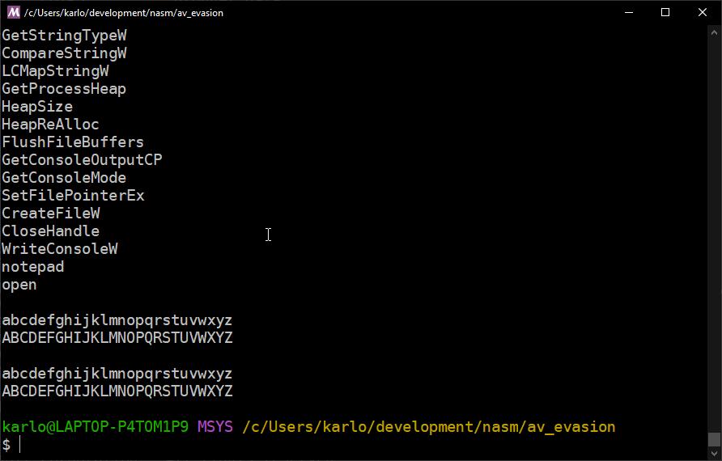
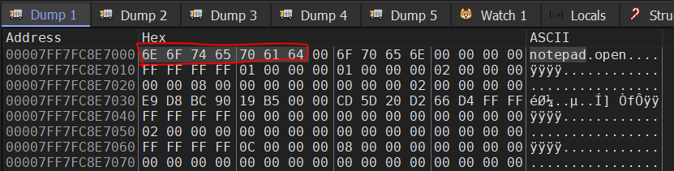
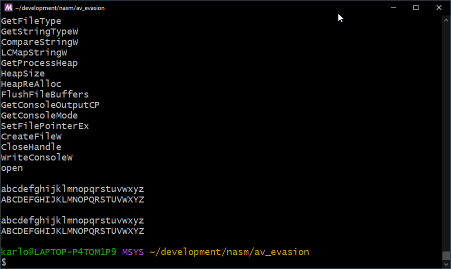
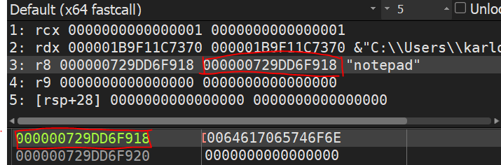
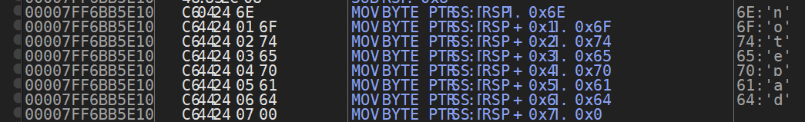

One of the features I implemented for my Remote Access Tool was an anti-virus evasion capability in the form of strings obfuscation. It wouldn't fool an EDR or a reverse engineer but it was quick to implement so I added it.
This was over a year ago. I decided to revisit this feature to try and understand it better and find out if it is actually effective.
What to expect
In this two-part blog post I will look into the following:
- Hiding argument strings
- Hiding API call strings
THe one you reading now is about the first one. I will be explaining how it's done in C and later convert it to x64 Windows Assembly so we can better understand what's happening under the hood.
Hiding function argument strings
I got the idea for this AV evasion technique from this blog post. The author posits that one part of an anti-virus detection capability is through checking for suspicious strings in an executable.
For the purpose of this post, let's pretend that "notepad" is a suspicious string that we don't want be detected by the anti-virus.
#include <windows.h>
#include <shellapi.h>
int main(void)
{
ShellExecute(0, "open", "notepad", NULL, NULL, SW_SHOW);
}
You might think that a call to
ShellExecuteis already a big red flag, and you are right. It is! But we'll talk about hiding API calls on the next post. Let's focus on the parameter for now.
In the place of the anti-virus, we'll be using the strings command to check for visible strings like so:

As expected, the word "notepad" is easily detected. This is becaues any string that we declare and initialize in a program gets placed in the .data segment in memory by the compiler:

To prevent detection, we need a way for the string to not be present in our compiled executable.
The solution
The solution is to declare the string to be passed as the parameter like so:
char ca_notepad[] = { 'n','o','t','e','p','a','d', 0 };
ShellExecute(0, "open", ca_notepad, NULL, NULL, SW_SHOW);
And when strings is run, we now see that the "notepad" string is not present anymore.

How did this happen?
This is because data contained in arrays are placed on the stack instead of the .data segment when declared within a function (And also, as long as it is not declared as static).
To further understand how this happens, let's convert this C program into x64 assembly.
Converting to x64 assembly
First, we setup our boilerplate code with an entry point and a call to ExitProcess.
bits 64
default rel
segment .text
global main
extern ExitProcess
main:
push rbp
mov rbp, rsp
xor rax, rax
call ExitProcess
Before we can call ShellExecute, we first need to import the ShellExecuteA symbol using extern.
segment .text
...
extern ExitProcess
extern ShellExecuteA
Aside: Why ShellExecuteA and not ShellExecute?
Because if you would look in the MSDN documentation, you would find that there really isn't a
ShellExecutefunction available. There areShellExecuteA(For ANSI strings) andShellExecuteW(For Unicode strings), however.ShellExecuteis just a macro for these two functions. We can confirm this by looking at theshellapi.hsource code.
#ifdef UNICODE
#define ShellExecute ShellExecuteW
#else
#define ShellExecute ShellExecuteA
#endif // !UNICODE
Since assembly does not use header files we can just call
ShellExecuteAorShellExecuteWdirectly. In this example, we won't be needing unicode support so we're going to be using the former.
Before we call the function in assembly, let's go back and take a look at how we did it in C.
ShellExecute(0, "open", "notepad", NULL, NULL, SW_SHOW);
We have 5 paremeters to pass to the function. Here's how we can write this in assembly using the Microsoft x64 calling conventions.
push 0x5 ; nShowCmd ; SW_SHOW == 0x5
push 0x0 ; lpDirectory ; NULL == 0x0
xor r9, r9 ; lpParameters ; Clear register == NULL
lea r8, [msg_notepad] ; lpFile
lea rdx, [msg_open] ; lpOperation
xor rcx, rcx ; hwnd
sub rsp, 32
call ShellExecuteA ; Call function
add rsp, 32
We then initialize the strings by adding a data segment section:
segment .data
msg_open db "open", 0
msg_notepad db "notepad", 0
For reference, here is our full code so far:
bits 64
default rel
segment .data
msg_open db "open", 0
msg_notepad db "notepad", 0
segment .text
global main
extern ExitProcess
extern ShellExecuteA
main:
push rbp
mov rbp, rsp
push 0x5
push 0x0
xor r9, r9
lea r8, [msg_notepad]
lea rdx, [msg_open]
xor rcx, rcx
sub rsp, 32
call ShellExecuteA
add rsp, 32
xor rax, rax
call ExitProcess
Take note that this version of the code is still the one where the "notepad" string is detectable.
To hide this string we need to apply the same solution we did to our C code; which is to place the data on the stack so that it would not be placed in the .data segment.
Here is how we did it in C:
char ca_notepad[] = { 'n','o','t','e','p','a','d', 0 };
ShellExecute(0, "open", ca_notepad, NULL, NULL, SW_SHOW);
And here is how to do it in assembly:
sub rsp, 8 ; Reserve space on stack for string
mov byte [rsp], "n"
mov byte [rsp+1], "o"
mov byte [rsp+2], "t"
mov byte [rsp+3], "e"
mov byte [rsp+4], "p"
mov byte [rsp+5], "a"
mov byte [rsp+6], "d"
mov byte [rsp+7], 0x0
lea r8, [rsp] ; Load address of string to r8
add rsp, 8 ; Reclaim space
Here's a summary of the the above code:
- Since our string is 8 characters long (Including the
0x0orNULLterminator), we reserve space on the stack withsub rsp, 8. - Each character is then placed individually in the reserved space using
move bytewhile adding an offset torsp. - The address pointed to by
rspis then loaded to ther8register (This holds our 3nd parameter). - We reclaim our reserved space using
add rsp, 8.
After the code above, r8 would now point to the location in the stack where our string resides:

Aside: What if we have longer strings?
If we have a longer string like "powershell", then we need to reserve more space on the stack. Take note, however that when reserving space we need to maintain the stack alignment so we add and subtract by multiples of 8. The "powershell" string has 11 characters so we use 16.
sub rsp, 16
mov byte [rsp], "p"
mov byte [rsp+1], "o"
mov byte [rsp+2], "w"
mov byte [rsp+3], "e"
mov byte [rsp+4], "r"
mov byte [rsp+5], "s"
mov byte [rsp+6], "h"
mov byte [rsp+7], "e"
mov byte [rsp+8], "l"
mov byte [rsp+9], "l"
mov byte [rsp+10], 0x0
lea r8, [rsp]
add rsp, 16
With this final version of the code, "notepad" will not be visible to strings anymore.
Here is our final code:
bits 64
default rel
segment .data
msg_open db "open", 0
segment .text
global main
extern ExitProcess
extern ShellExecuteA
main:
push rbp
mov rbp, rsp
push 0x5
push 0x0
xor r9, r9
sub rsp, 8
mov byte [rsp], "n"
mov byte [rsp+1], "o"
mov byte [rsp+2], "t"
mov byte [rsp+3], "e"
mov byte [rsp+4], "p"
mov byte [rsp+5], "a"
mov byte [rsp+6], "d"
mov byte [rsp+7], 0x0
lea r8, [rsp]
add rsp, 8
lea rdx, [msg_open]
xor rcx, rcx
sub rsp, 32
call ShellExecuteA
add rsp, 32
xor rax, rax
call ExitProcess
Hiding at scale
Writing the code above can get a little tedious especially if we want to pass a really long string. Thankfully, we can use a macro like the one I've written below:
%macro addstr2stack 1-*
%assign i 0
%assign j 0
%rep %0
mov byte [rsp+i+8*j], %1
%assign i i+1
%rotate 1
%if i >= 8
%assign j j+1
%assign i 0
%endif
%endrep
%endmacro
What the macro does is that it loops through each character and places it into the correct position on the stack.
Important note: When reserving space on the stack, make sure it is in multiples of 16! This is because the stack has a 16-bit boundary for stack alignment!
For example, if our string has 10 characters, we only need to reserve 16 bytes. If our character is 20 characters long, we'd have to reserve 32 bytes.
This macro can then be called like this:
sub rsp, 16 ; Reserve space for the string on the stack
addstr2stack "n", "o", "t", "e", "p", "a", "d", 0x0
lea r8, [rsp]
...
add rsp, 16 ; After use, release the space
Here is what the result of the macro looks like in the debugger:

For the full source code visit the repo on Github. Updates and fixes to the code will be pushed there.
So there you have it, we were able to successfully hide strings by changing the way how the data is declared and placed in memory. If you think about it, the technique is very simple.
However, we've only seen it used against the strings command. Can it evade an actual anti-virus? The answer is probably no. In my next post I'll be talking about API call obfuscation that would help hide functions like ShellExecute.
Edit: Part 2 here
. Also, for any questions or comments, feel free to reach out to me on Twitter or LinkedIn.